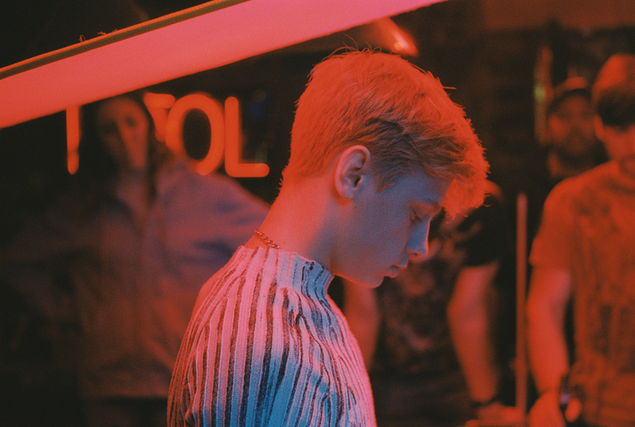

MO
MMY
영공주 30번째 시네마토크 '마미'
자비에 돌란 감독의 5번째 작품
제67회 칸영화제 심사위원상 수상
2021.07.14 (금) 19시 20분
참석 아동심리학 전문가 홍길동
정시 상영 후 GV가 진행됩니다.
상기 GV 일정 및 참석자는 변동될 수 있습니다.
영화공간주안 시네마토크는
감독, 배우 또는 관련 전문가를 초청하여 영화의 기획 의도나
작품의 의미를 토론하고 영화의 깊이 있는 이야기를 들을 수 있는
영화공간주안의 특별 상영회입니다.
what kind of movie?

아이 킬드 마이 마더를 시작으로 하트비트, 로렌스 애니웨이,
탐엣더팜까지 불과 스물다섯의 어린 나이로 전세계 영화제를
석권하며 ‘칸의 총아’로 떠올랐던 자비에 돌란 감독의
다섯 번째 작품 마미는 제 67회 칸영화제에서 세계적인 거장
장 뤽 고다르의 언어와의 작별과 함께 심사위원상을 수상하며
전세계인의 이목을 집중시켰다.
이후 제39회 토론토국제영화제와 제19회 부산국제영화제에서
관객들의 폭발적인 반응과 함께 최고의 화제작으로 떠오른 마미는
“숨막히는 에너지와 경이로운 온기로 가득 찬 작품”_Time,
“감정의 불꽃놀이가 펼쳐진다”_Screen International,
“재미있고, 슬프지만, 무엇보다도 독창적인 영화”_Variety,
“대담한 비주얼과 풍성한 이야기”_Vanity Fair,
“기교를 뛰어넘는 에너지와 움직임”_indieWIRE, “풍부함과 펑키함,
그리고 완벽한 독특함이 전염된다”_Financial Times,
“풍부하고 심도 깊고, 놀라울 만큼 살아있는 작품”_The Playlist
등의 격찬을 이끌어내며 자비에 돌란 감독을 세계적인 거장으로 우뚝 세웠다.
상기 사이트는 장은정 포트폴리오로 제작되었습니다.
2021 ⓒ EUNJEONG